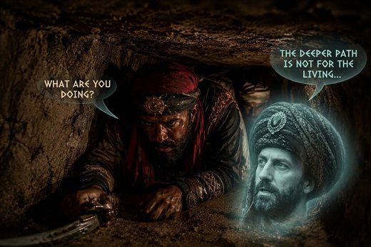

Chroniques du Vieux Royaume
Accueil
Journal
Les héros
Personnages
Lieux
Quêtes
Chronologie
Carte
Galerie
Liens externes
|
Fiches ↗
Résumé PDF ↗
La grotte au trésor

Ali Pashino et un pirate dans le tunnel
Dans la zone de collines au sud des ruines de Garches (carte).
Trésor de l'Innommable, protégé par magie. En brisant la protection, les héros ont créé un tunnel de plusieurs dizaines de lieues.